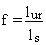
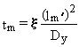

2.0 Advective-Dispersive Equation
The advective-dispersive equation for solute movement
through a river forms the basis of the mathematical algorithm used by the
riverine component. The surface-water flow is assumed to be steady and
uniform; the algorithms are developed for the limiting case of unidirectional
advective transport with three-dimensional (longitudinal, lateral, and
vertical) dispersion. The advective-dispersive equation for solute movement
in a river can be described by the following expression:
(2.1)
where
C = dissolved instream contaminant concentration (g mL-1 or Ci mL-1)(a)
u = average instream flow velocity (cm s-1)
Dx,Dy,Dz = dispersion coefficients in the x-, y-, and z-directions, respectively (cm2 s-1)
l = degradation/decay constant [= (ln 2)/(half-life)] (s-1).
Equation 2.1 does not take into account the effects of contaminant
adsorption to or desorption from sediment particles suspended in the water
column or in the river bed. As explained in Chapter 1.0, this should result
in conservative aqueous concentrations in most cases.
Contaminant releases to the riverine pathway in the
MEPAS methodology are generally of long duration relative to the travel
time from the point of release to the receptor. Because transient solutions
for contaminant migration and fate are most applicable for batch and infrequent
releases over relatively short periods of time (Codell et al. 1982), a
steady-state solution to the advective-dispersive equation is used in the
riverine component of MEPAS. The steady-state, vertically-integrated, mass-balance
equation for transport in a river (where longitudinal advection dominates
longitudinal dispersion) can be written as follows:
(2.2)
(a) When two sets of units are provided, the first refers to chemicals,
and the second refers to radionuclides.
in which
(2.3)
at y = 0 and y = B
where B = width of stream channel (cm).
2.1 Contaminant Concentration Equation
When Equation 2.2 is solved with the appropriate boundary conditions
(i.e., Equation 2.3), the riverine pathway is described by an analytical
expression that characterizes the transport of contaminants through a river.
For a point-source() contaminant release from the bank of a
stream having a rectangular cross-section, the solution to Equation 2.2
employing the boundary conditions defined by Equation 2.3 is very similar
to those outlined by Codell et al. (1982), Strenge et al. (1986), and Whelan
et al. (1986):
(2.4)
where
Qc = contaminant flux at the source (g s-1 or Ci s-1)
h = depth of stream (cm)
x = downstream distance to receptor (cm)
y = lateral distance to receptor (cm).
The concentration at y = 0 is used in computing contaminant
levels for the exposure component of the MEPAS methodology. By assuming
that y equals 0, Equation 2.4 reduces to
(2.5)
(a) The term "point source" refers to the source-term configuration,
which reflects simplifying assumptions, and does not refer to the exact
technical definition associated with the concentration equation.
Note, for example, that a vertically averaged point source represents a
point source in the x and y directions, and a line source in the
z-direction.
A line source along the edge of the stream can be
represented as a series of point sources along the length of the line source.
As the downstream receptor location is moved farther away, the line source
resembles a point source located at the center of the line source (Receptor
A in Figure 1.1). As the receptor location is moved closer to the center
of the line source, only that portion of the source term upstream of the
receptor has an opportunity to influence contaminant levels at the receptor;
in effect, the strength of the source term is reduced. Under these circumstances,
the line source can be approximated as a point source that is located at
one-half the distance between the receptor location and the upstream end
of the line source (Receptor B in Figure 1.1), and the reduced strength
of the source is accounted for by multiplying Equation 2.5 by the fraction
of the source term upstream of the receptor:

(2.6)
where
f = fraction of the source term upstream of the receptor (dimensionless)
lur = length of the source term upstream of the receptor (cm)
ls = total length of the source term (cm).
Therefore, only the point source solution is used in the surface-water
component of MEPAS.
Discharge in a river channel varies along the length
of the river, generally increasing in the downstream direction due to inflowing
tributary streams and groundwater. The riverine component accounts for
an increase in discharge between the source location and the receptor location
by using a dilution ratio:
(2.7)
where
Qratio = dilution ratio (dimensionless)
Qr = river discharge at the receptor location (cm3 s-1)
Qs = river discharge at the source location (cm3 s-1).
Incorporating Equations 2.6 and 2.7 into Equation 2.5 gives the final form
of the steady-state equation used to simulate concentrations in the riverine
component of MEPAS:
(2.8)
2.2 Multiple River Receptors
When more than one river receptor is specified in
a MEPAS run, an estimation technique is employed to calculate concentrations
at the second and subsequent receptors, rather than using Equation 2.8.
The method estimates contaminant concentrations for the current receptor
based on concentrations for the previous receptor as follows:
(2.9)
where
Cn = contaminant concentration for the current receptor (g mL-1 or Ci mL-1)
Cn-1 = contaminant concentration for the previous receptor (g mL-1 or Ci mL-1)
Qr(n) = river discharge at the current receptor location (mL s-1)
Qr(n-1) = river discharge at the previous receptor location (mL s-1)
lm(n) = lateral mixing length at the current receptor location (cm)
lm(n-1) = lateral mixing length at the previous receptor location (cm)
fn = fraction of the source term upstream of the current receptor (dimensionless)
fn-1 = fraction of the source term upstream of the previous receptor (dimensionless).
2.3 Lateral Mixing Length
The mixing length is the distance over which contamination
is considered fully mixed in the lateral direction and is used in Equation
2.9. The mixing length is estimated by employing the advective-dispersive
equation and its associated Gaussian distribution solution. The one-dimensional
advective-dispersive equation in the lateral direction is written as
(2.10)
The unit area solution to Equation 2.10 in a river of infinite lateral extent is described by
(2.11)
in which
(2.12)
where
M = contaminant mass or activity per unit area (g cm-2 or Ci cm-2)
sl = standard deviation in the lateral direction (cm)
tt = representative contaminant travel time (s).
With the assumption that contaminant dispersion does not occur through
the river banks once the contaminant has entered the river, contaminant
spreading is only in the lateral direction. Therefore, the lateral mixing
length for the fully mixed condition is assumed as the dispersive distance
associated with one-half the standard deviation:
(2.13)
where lm = lateral distance over which the contaminant
is assumed to be uniformly distributed (equivalent to one-half the standard
deviation) (cm).
To illustrate that Equation 2.13 has a physical basis,
a similar mixing-length expression can be developed by defining a time
scale associated with complete lateral mixing as similar to the one found
in Codell et al. (1982):

(2.14)
where
tm = time to achieve the fully mixed condition (i.e., representative contaminant travel time) (s)
x = proportionality coefficient (dimensionless)
l'm = alternative lateral distance over which the contaminant
is assumed to be uniformly distributed (cm).
By rearranging Equation 2.14, the effective length, which represents the
fully mixed condition, can be solved for
(2.15)
in which
(2.16)
where f = proportionality constant (dimensionless).
Codell et al. (1982) note that when f# 3.3, the fully mixed condition can be assumed. When f
is between 3.3 and 12, the release is considered to be neither fully mixed
over the width of the river nor unaffected by the river boundary. Because
Equation 2.13 represents a more conservative expression than Equation 2.15
when f equals 3.3, Equation 2.13 is used to
describe the lateral mixing length in the riverine environment.
The MEPAS methodology computes lm to identify
the mixing width. If lm is larger than the width of the river,
lm is set equal to the width of the river. This procedure ensures
a continuous transition between the fully mixed condition and non-fully
mixed condition.
2.4 Representative Contaminant Travel Time
To use Equation 2.13, a representative travel time
has to be identified. The MEPAS waterborne components recognize three travel
times: 1) the advective travel time, 2) the travel time due to advection
and dispersion, 3) the time to the peak flux or concentration (which includes
advection, dispersion, and decay). Longitudinal dispersion is not considered
by the riverine component, because advection is assumed to dominate dispersion
in the flow direction. In addition, including the effects of decay produces
an apparent travel time that is not indicative of the average time required
for a particle to travel from the source to the receptor. Thus, the advective
travel time is used in Equation 2.13:
(2.17)
The use of advective travel time in Equation 2.13 is consistent with
the riverine mixing zone equation given in Mills et al. (1985).
2.5 Lateral Dispersion Coefficient
The transverse dispersion coefficient is required
by Equations 2.8 and 2.13. Accurately defining this parameter for all riverine
systems under all conditions is difficult. The coefficient is, therefore,
defined such that representative properties of the water body are considered
in the estimation.
Fischer et al. (1979) note that dispersion in rivers
is generally related to the characteristics of the river using the following
relationship:
(2.18)
where
b = proportionality constant (dimensionless)
u* = shear velocity (cm s-1).
Fischer(a) and Fischer et al. (1979) note
that researchers (e.g., Orlob 1959; Sayre and Chamberlain 1964; Sayre and
Chang 1968; Engelund 1969; Prych 1970; Elder 1959; Okoye 1970; Glover 1964;
Fischer 1967; Yotsukura et al. 1970) have defined a range of values for
b. In laboratory flumes, b
ranges from 0.5 to 2.4. For practical purposes, Fischer (1967) suggests
that b = 0.6.
The shear velocity is estimated by Fischer (1974)
by assuming that it is directly proportional to the average flow velocity
of the stream (u):
(2.19)
(a) Fischer, H. B. Date Unknown. "Longitudinal Dispersion and Turbulent
Mixing in Open Channel Flow." Working Paper. University of California at
Berkeley. California.
Equation 2.19 was suggested for streams with Manning's roughness coefficients
on the order of 0.04. By combining Equations 2.18 and 2.19 with b
= 0.6, the dispersion coefficient in the lateral direction used by the
riverine component is given by:
(2.20)